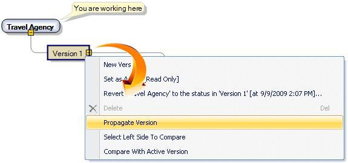
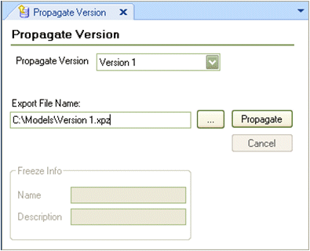

The Propagate Version operation is used to distribute an entire Knowledge Base Version in an xpz file. The Propagate Version operation can be performed from a Development Version as well as from a Frozen Version. When selecting a development version; a frozen version will be automatically generated to keep a "photo" of the version to reflect this milestone. To propagate a version, open the Knowledge Base Versions Tool Window, right-click on the desired version you want to propagate and select "Propagate Version".  The Propagate Version Tool Window is displayed:  The Propagate Version Combo box is selected with the desired version to propagate. Set the Export File Name location and configure the Freeze Info section if needed (only when a development version is selected) and press Enter. An xpz file with the version will be created. See Also |
| Backlinks | |
| Import a Propagation of Changes | Propagate Changes |